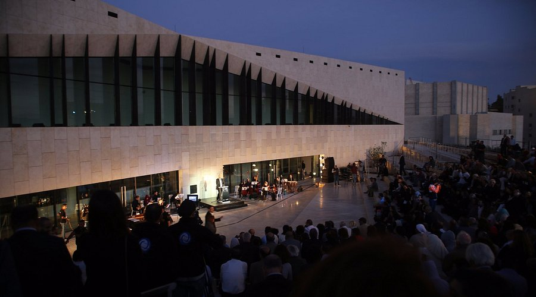
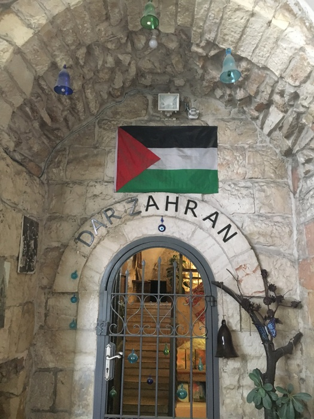

متحف فلسطين
متحف فلسطين في رام الله هو مؤسسة ثقافية تهدف إلى حفظ تاريخ وثقافة فلسطين وعرضها للعالم. يعرض المتحف مجموعة متنوعة من المقتنيات التي تبرز التراث الفلسطيني، بما في ذلك الآثار، والفنون، والملابس التقليدية، والصور التاريخية. يقدم المتحف تجربة تعليمية تتيح للزوار التعرف على هوية الشعب الفلسطيني وتاريخه الطويل. بفضل تصميمه العصري والمبتكر، يعد متحف فلسطين وجهة ثقافية هامة في رام الله، يعكس فخر الفلسطينيين بتراثهم وثقافتهم.
اضغط للذهاب الى الموقع على الخريطة

دار زهران التراثي
المحكمة العثمانية في رام الله هي إحدى المعالم التاريخية الهامة التي تعكس فترة الحكم العثماني في فلسطين. تأسست المحكمة في أواخر القرن التاسع عشر وتعد مثالًا على العمارة العثمانية المميزة. كانت المحكمة مكانًا لفض المنازعات وتنفيذ الأحكام في المنطقة خلال تلك الفترة. اليوم، تعتبر المحكمة العثمانية نقطة جذب سياحية في رام الله، حيث يمكن للزوار التعرف على تاريخ المدينة وفترة الحكم العثماني من خلال جدرانها القديمة وتصميمها المعماري الفريد.
اضغط للذهاب الى الموقع على الخريطة
متحف محمود درويش
متحف محمود درويش في رام الله هو وجهة ثقافية تحتفل بحياة الشاعر الفلسطيني الكبير وأعماله الأدبية. يضم المتحف مقتنيات شخصية لدر ويش، مثل المخطوطات والصور والكتب. يقع المتحف في قلب رام الله ويتميز بتصميمه العصري الذي يعكس روح أعمال الشاعر. يُعد المتحف مكانًا مثاليًا لاكتشاف إبداع محمود درويش وفهم تأثيره الكبير على الأدب الفلسطيني والعالمي.
اضغط للذهاب الى الموقع على الخريطة